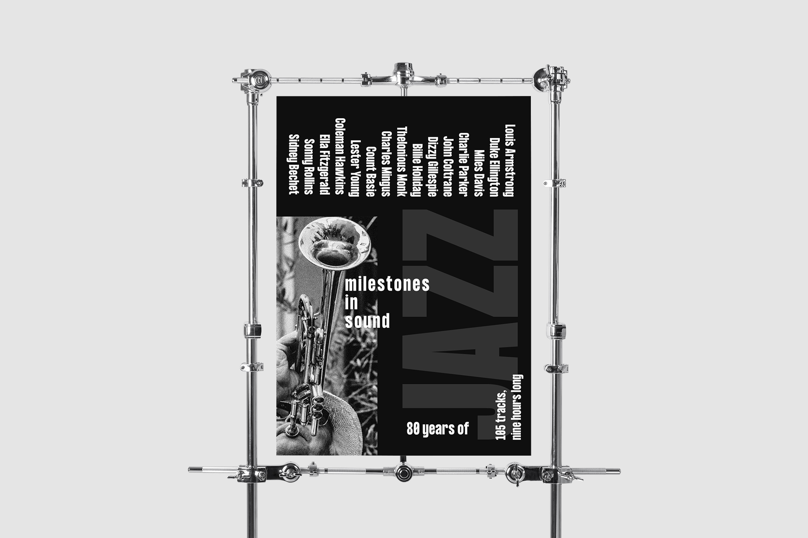
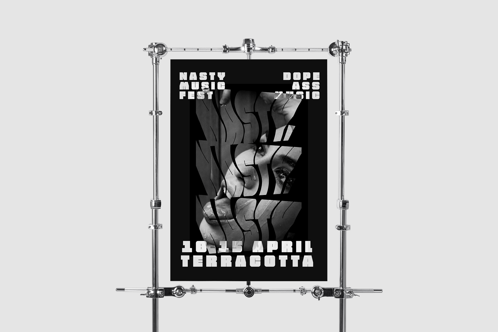
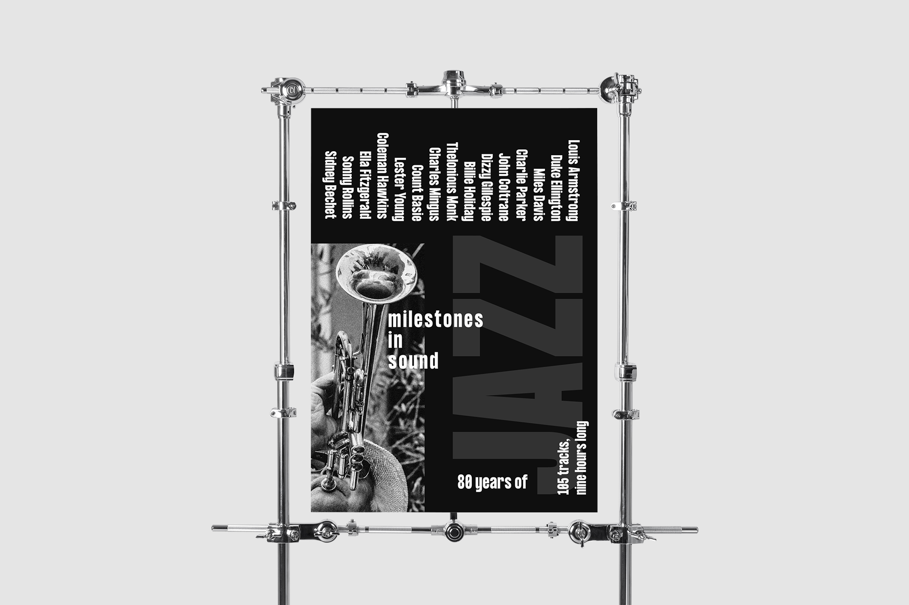
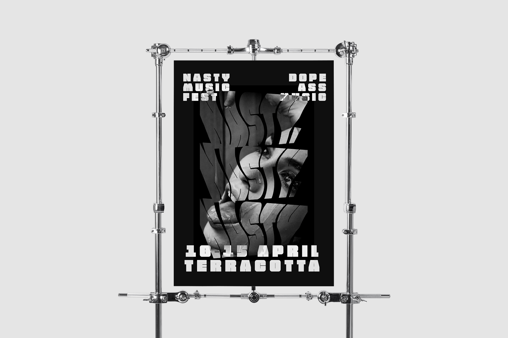
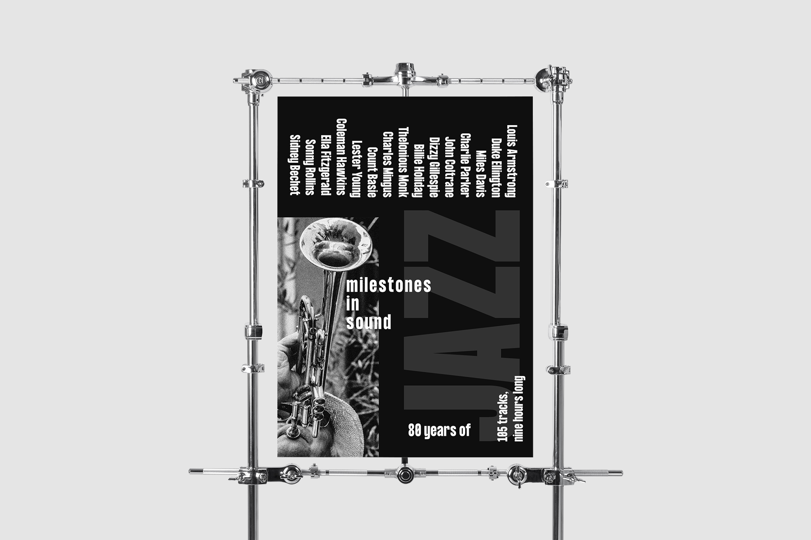
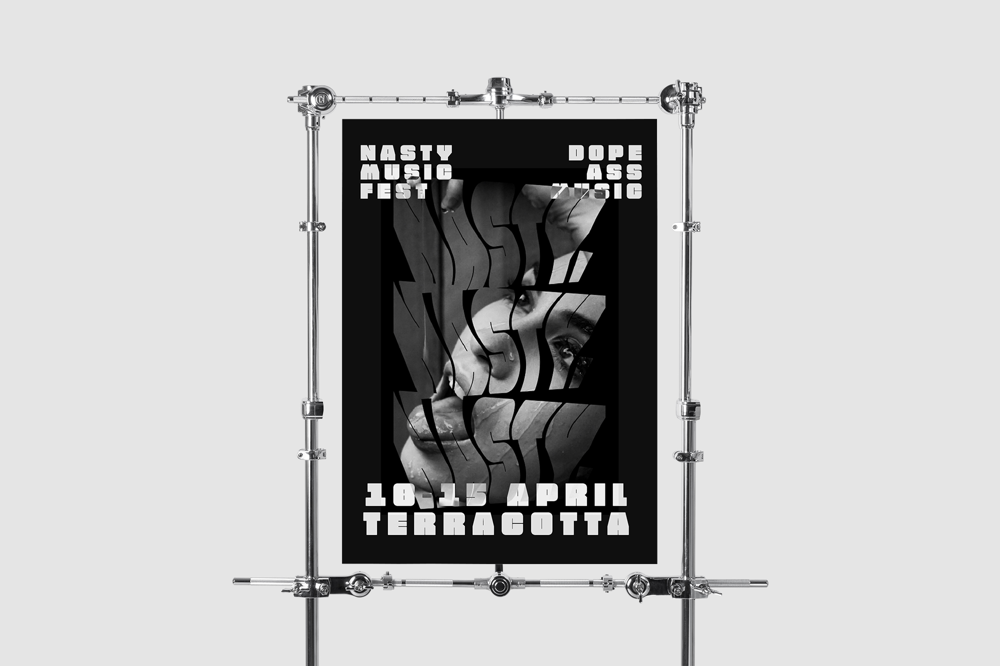

En este proyecto me plantee realizar unos ejercicios de diseño más puro, buscando el equilibrio con elementos muy básicos y esquemas monocromos.
Estas son alguna de las piezas seleccionadas, entre más de 20 diseños totalmente originales.

